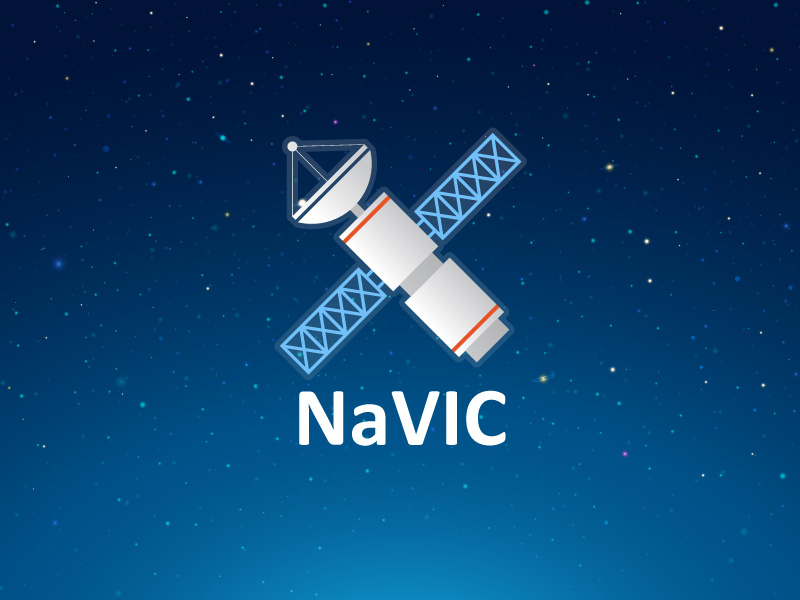
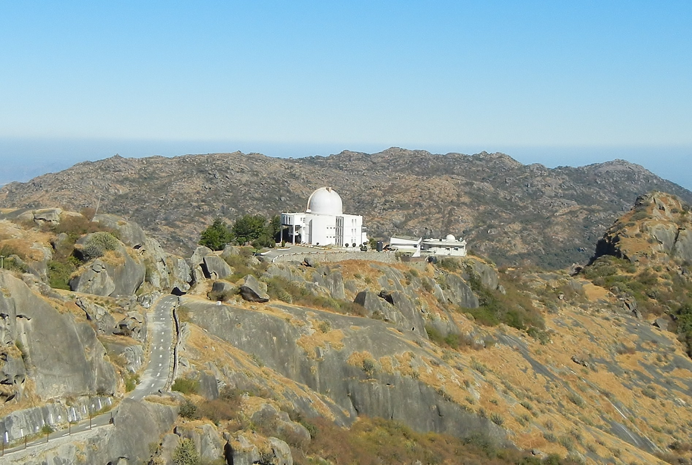

How India built NavIC, the country's own GPS network
India's regional satellite navigation system has had a difficult incubation, but it is finally ready.
The unplanned cost of replacing two satellites, poor procurement decisions and administrative
failings have increased the initial budget and resulted in a delay of around 7 years.
Today, multiple constellations of navigation satellites from the U.S., Russia, China and Europe orbit the Earth,
providing multiple location-based services for consumers, businesses, militaries and civil aviation.
With the arrival of India's IRNSS-1I in orbit, India now has a functioning regional satellite navigation service,
initially called the Indian Regional Navigation Satellite System (IRNSS), but changed to NavIC in 2016.
(NavIC stands for NAVigation with Indian Constellation, and also means "sailor" in Sanskrit.)
IRNSS-1I liftoff
IRNSS-1I liftoff Liftoff of IRNSS-1I on April 12, 2018.
NavIC consists of 7 satellites in a combination of geosynchronous and geostationary orbit,
a ground segment of 15 sites located throughout India used for tracking and communications,
and a user segment concerned with developing physical receivers and associated applications.
Getting this far has been a bumpy ride.
All modern space-based services, navigation satellites touch the lives of most of the people on the planet,
even if they may not be directly aware of it. Financial services, aviation, military, transport and more
are dependent on super-accurate GPS timing signals. Navigation was one of the earliest applications
ushered in by the space race. In March 1958, scientists at Johns Hopkins University listened
to the beep-beep signals from Sputnik that had been launched just a few months earlier. In their attempts
to locate its position in space they realised that if they knew the precise position of the satellite in space,
they could calculate their own location on Earth. This is perhaps not very useful in a built-up city,
but critical if you happen to be out in the open sea, a featureless desert or a remote mountain range.
The strategic value of such critical information was clear, so with the backing of the Indian military,
the proposal for an Indian satellite navigation system received all the political and financial support it needed.
India's NavIC provides service equivalent to the Global Navigation Satellite System (GNSS),
the United States' GPS, China's Beidou, Russia's Glonass, and Europe's Galileo. However,
India's NavIC offers regional, not global coverage. Once fully operational,
NavIC is intended to provide two specific services:
unencrypted Standard Positioning Service (SPS) with an accuracy of less than 10 meters for all users,
and an encrypted Restricted Service (RS), with an undisclosed but higher accuracy for use by India's security services.

IRNSS-1I
IRNSS-1I IRNSS-1I spacecraft undergoing testing in a clean room at ISITE, ISAC Bengaluru.
ISRO indicates that eventually NavIC applications will support:
Terrestrial, aerial and marine navigation
Disaster management
Vehicle tracking and fleet management
Integration with mobile phones
Precise timing
Mapping and geodetic data capture
Terrestrial navigation aid for hikers and travellers
Visual and voice navigation for drivers
RNSS was initially approved by the Indian government in 2006 at a cost of $210 million (Rs. 1,420 crore),
with a goal of providing an independent, regional, GPS-like service to support societal and
economic growth across mainland India (and 1,500 kilometers beyond its coastline).
The cost increased to $527.9 million (Rs. 3,260 crore) by 2014, and the final bill has yet to emerge.
It was expected to be operational by December 2015.
For ISRO, 2013 was a particularly eventful year. The first in the series of delays was triggered by ISRO's
unexpected announcement to launch its Mars Orbiter Mission. That decision was taken in haste in early 2012 when Phobos-Grunt,
a joint Russian and Chinese mission to Mars, failed to leave Earth orbit in November 2011.
That failure gave India an opportunity to get to Mars before China,
but only if India could make the Mars launch window in autumn 2013.
Secondly, ISRO's launch of the communication satellite GSAT-D5
on 19 August 2013 was aborted due to a fuel leak in one of the rocket's liquid propellant boosters.
These two unexpected events forced ISRO to change launch schedules at the expense of IRNSS.
Furthermore, the Mars Orbiter Mission, which was launched on 5th November but remained in Earth orbit until 1st December 2013,
coincided with the 50th anniversary of The Nike-Apache launch on 21 November 1963.
Nike-Apache is widely regarded as the beginning of the Indian Space programme.
IRNSS architecture
IRNSS architecture Image: ISRO
The first satellite, IRNSS-1A, was launched on 1 July 2013, and the last satellite of the seven, IRNSS1-G,
was launched three years later on 28 April 2016. Bad news came soon after that. In late 2016,
ISRO reported that all three (the primary and both backups) Rubidium atomic clocks onboard IRNSS-1A had failed.
In the absence of an accurate clock, the constellation could not function as designed.
IRNSS-1H was launched on 31 August 2017 as a replacement for IRNSS-1A,
but a failure of the payload fairing resulted in IRNSS-1H being trapped inside the final stage of the launch vehicle.
It never made it to its designated orbit and the mission was considered a failure.
The replacement for the replacement, IRNSS-1I, was launched on 11th April 2018
and successfully arrived at its intended orbit four days later. With that,
India completed the NavIC constellation, with three in geostationary orbit (at 34E, 83E and 131.5E)
and four (in two pairs) in geosynchronous orbit inclined at 29 degrees
to the equatorial plane with their longitude crossings as 55 E and 111.5 E.
The ground segment consists of a series of facilities used for ranging
(determining the satellites' position in space using radio and laser),
network timing (synchronisation with a master clock), spacecraft control
(monitoring and maintaining satellite health and position), and data communications.
ISRO's 32-meter, fully steerable antenna at Byalalu (just outside Bangalore)
is the primary element in the Indian Deep Space Network. On 28 May 2013,
Byalalu formally became the ISRO Navigation Centre (INC) and
the centre of NavIC's ground segment of 15 sites that operate the NavIC service 24/7.
Completing the user segment has also been not been a smooth journey.
Mount Abu Observatory
Mount Abu Observatory Mount Abu Observatory, where a satellite laser ranging station supports NavIC.Image:
Wikipedia user Amitrochates
NavIC is a large, complex project reliant on multiple agencies working collaboratively to solve technical problems
spanning several disciplines. Delays and expenditure overruns are not unexpected.
Integrating input from numerous ISRO teams, government agencies and the private sector is required.
ISRO's contribution was assessed by an official audit report published in March 2018.
The report highlighted delays in "sites not being ready, revisions in the technical specifications,
non-compliance with contract specifications by the contractor, delays in shipment and delays in completion of civil works"
Absence of coordination between government and other agencies and "sheer administrative laxity" resulted in the delays.
Cost overruns included the purchase of 7 modems at $500,000 (INR 3.7 crore)
for use by the ground segment that were not capable of performing the desired function.
Arguably the delays in completing the space and ground segments should have provided additional time to complete the user segment.
Despite this, the applications, hardware, and associated infrastructure have been slow to offer countrywide
satellite navigation services.

In addition to traditional uses for fleet management, drivers, hikers and mountaineers,
India has combined NavIC capability with its satellite-based air traffic control system
for civil aviation called GAGAN (GPS Aided Geo Augmented Navigation).
Hardware companies are producing GPS receiver modules specifically for the emerging Indian market
that are compatible with GPS and GAGAN. The additional precision and resilience increase the scope of projects
that can support India's economic development. They include supporting the Archaeological Survey of India
in protecting India's heritage sites, assisting the fishing industry to locate the best fishing areas,
development of transportation networks (especially bridges, flyovers and elevated expressways),
help in defining accurate land records, and supporting the Indian railways to reduce accidents at automated railway crossings
in addition to improving real-time railway operations.
NavIC, along with other navigation satellite services, was designed primarily to support applications here on Earth.
A new and exciting avenue is now open that makes satellite navigation services available to spacecraft in Earth orbit.
NavIC is well-placed to provide emerging services for space-based commercial and scientific uses in the not-too-distant future.
Hardware manufacturers are developing satellite receiver modules that operate with India's NavIC,
as well as those from other countries.
India's journey to develop an independent and indigenous nationwide satellite-based navigation system is pretty much complete.
By the time the full constellation is declared operational, it will be approaching the halfway mark of its 10-to-12-year
predicted lifetime. India always had plans to increase the constellation to around a dozen from the initial seven to improve accuracy and resilience. That increase will involve the private sector, which was already tapped to build both IRNSS-1H and IRNSS-1I. ISRO is now in the final stages of selecting an Indian company to source its Rubidium clocks for future navigation satellites.